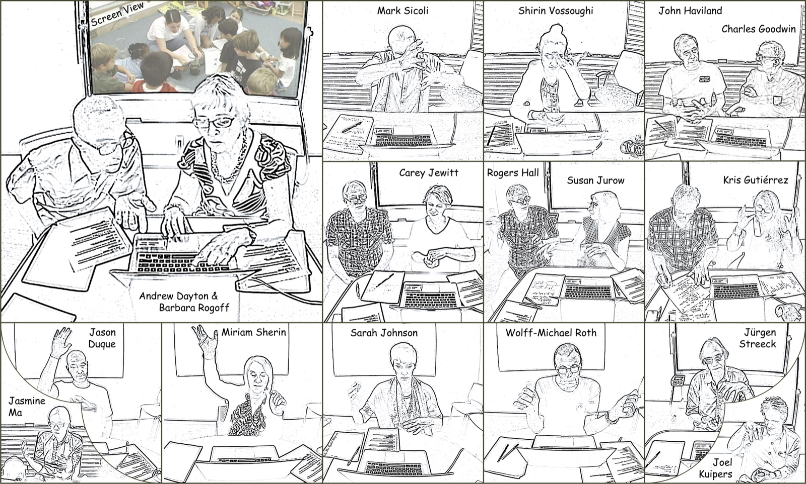

Learning How to Look & Listen
Building capacity for video-based social & educational research

- 19Individual viewings
- 14Presentations
- 1Group session
- 2:00The shared clip
This website brings together resources from a conference supported by the Spencer Foundation at Arizona State University where an interdisciplinary group of older and younger scholars gathered to document and illustrate the basic patterns of visual and auditory attention that are employed by researchers who use video to study social interaction. These scholars conducted individual analysis of a 2-minute video of classroom interaction showing the teaching of a key idea in the physics of matter—that matter occupies space—in a bilingual kindergarten–first grade classroom.
Website Organization
Individual Viewing Sessions
Each participant thinks out loud while watching the same two-minute clip, showing their own approach to video analysis.
1 recordingGroup Viewing Session
All participants view and discuss the same clip together, in a collaborative interaction analysis.
14 recordingsPresentations
Scholars describe how video-based analysis has shaped their past and current research.
3 themesFuture Directions
Key issues, needs and next steps for video analysis in education and the social sciences.
Conference documents
In the group viewing session, conference organizer Frederick Erickson introduces the purposes and goals of this work.